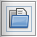
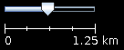

JOSM Quickstart¶
JOSM is a feature rich, extensible, offline desktop editor for OpenStreetMap (OSM) data, written in Java.
It supports loading stand-alone GPX tracks and GPX track data as well as editing existing nodes (points), ways (lines), metadata tags (name/value information) and relations (ordered sequence of points and lines) from the OSM database. GPX tracks, are usually downloaded in advance from a GPS receiver or from other sources.
This quickstart covers basic usage of the Java OpenStreetMap editor.

Load a sample (ficticious) map¶
Now let’s open up a sample OSM file which we will use to learn the basic ways to draw maps with JOSM. Note that this map is not real, in that it is not a real map of a real place, so we will not save it on OpenStreetMap.
Download the file here: sample.osm
Now let’s open the sample map file in JOSM. Click the “Open” button in the upper left.
Find the file sample.osm. It is probably in your Downloads folder, unless you saved it somewhere else.
Click on it, and then click “Open”. You should now see a sample map that looks like this:

Nota
You will use these data in order to try various editing techniques. You must however never upload these fictitious data to the database.
Navigate the map¶
To move the map left or right, up or down, hold your right mouse button down, and move your mouse.
There are several ways to zoom in and out of the map. If you have a mouse, you can use your scroll wheel to zoom in and out. If you are using a laptop and don’t have a mouse, you can zoom in and out using the scale bar in the upper left of the map window. Drag the bar left and right by holding your left mouse down and moving the bar left or right with your mouse.
Look at the sample map. There a few different types of objects here. There is a river, a forest, some buildings, several roads, and a couple of shops. To select an object, click on it with your left mouse button.
Points, lines, and shapes¶
As you click different objects on the sample map, notice that there are three different types of objects on the map. There are points, lines, and shapes.
Points are a single location, represented by symbols. On this sample map, there are two points, a shoe shop and a supermarket. The shoe shop is represented by a shoe symbol, and the market is represented by a shopping cart.
There are several lines on the map as well, which represent roads. If you look closely you will see that within the lines, there are points as well. These points don’t have any symbols or other information associated with them, but they help to define where the line is located.
Lastly, there are numerous shapes on the sample map, representing different places - a forest, a river, a park, and buildings. A shape is used to represent an area, like a field or a building. A shape is exactly like a line - the only difference is that the line begins at the same point where it ends.
It’s easy to think of a map as containing these three basic types of objects - points, lines, and shapes. In OpenStreetMap there is special terminology which you will come to learn as you progress. In OSM, points are actually called nodes, and lines are called ways. A shape is called a closed way because it is just a line that ends at the same point where it begins.
You may notice that when you select an object, a list appears to the right of the map in a window called “Properties”. These are known as tags. Tags are information that is tied to a point, line or shape that describes what it is. We’ll learn more about tags in a later chapter. For now all you need to know is that this information helps describe whether our object is a forest, a river, a building, or something else.
Think about drawing a map by hand, and how you are also drawing points, lines, and shapes. What other places are best represented by points? Lines? Shapes?
Changing objects¶
- Select the forest on the left side of the map. Be sure to click on the line around the forest, not one of the points on the line.
- Now hold your left mouse button down and drag your mouse. You should be able to move the forest to a new location on the map.
- Click on one of the points on the line around the forest. Hold your left mouse button down and drag your mouse. You should be able to move the point. This is how you can change the shape of an object, or move a point.
Drawing¶
- On the left side of JOSM is a column of buttons. Many of these buttons open new windows on the right side that provide more information about the map. The most important buttons, however, are at the top of these column. These buttons change what you can do with your mouse.
- The top buttons in this column are the ones you will use the most. They are used for selecting objects and for drawing new ones.
- Until now, you have been using the Select tool, which looks like this:
Before you draw, you need to make sure that nothing is selected.
Click in the black space on the map, where it is empty, to make sure nothing is selected.
Click on the second button, the Draw tool.

Find an empty area on the map, and double-click with your mouse. This will draw a single point.
- To draw a line, single-click with your mouse. Move your mouse and click again. Continue until you are happy with your line. To end the line, double-click your mouse.
- Draw a shape the same way that you draw a line, but finish the shape by double-clicking on the point where you started the line.
Add presets¶
Now we know how to draw points, lines and shapes, but we still haven’t defined what they represent. We want to be able to say that our points are shops, schools, or something else, and whether our shapes are fields, buildings, or something else.
Click on the Select tool, in the column of buttons on the left.
Select one of the objects that you drew with the Draw tool.
On the top menu, click “Presets” and choose the type of location you would like to define.
When you choose on a preset, a form will pop up asking you for more information. You do not have to fill in every field, but you may wish to add some of the important fields, such as the name of the object.
When you are finished entering the information, click “Apply Preset”. If everything went well, your point, line, or shape should change colors or show a symbol. This is because you have defined what it is.
Draw your own map¶
Now let’s draw a map in order to practice the techniques you have learned. You may wish to redraw the map that you drew on paper previously. - Drag the map away from the sample map. Hold the right mouse button
and drag your mouse, until you have a nice empty area to draw on.
- Use the Draw tool to create points, lines, and shapes. Describe what your objects are by selecting from the Presets menu.
- When you are finished, you should have your own map, similar to the sample map that we opened in sample.osm.
Remove the sample layer¶
Once you feel comfortable with these basic editing techniques you might want to turn your attention to mapping real features.
Nota
It is very important that you first remove the layer with the sample data. These data are fictitious and must not be uploaded to the OpenStreetMap database (newer JOSM releases automatically prevent this).
In the Layers window on the upper right of the screen select the sample.osm layer. Then click on the trash can icon in the lower right corner of that window. Alternatively you can choose delete from the context menu of the layer.
What next?¶
- Try the LearnOSM documentation, from which this quickstart was derived: http://learnosm.org/en/josm/start-josm/
- In order to continue editing you first need to download real data. This is explained in the next chapter: http://learnosm.org/en/josm/more-about-josm/
- Website: https://josm.openstreetmap.de/